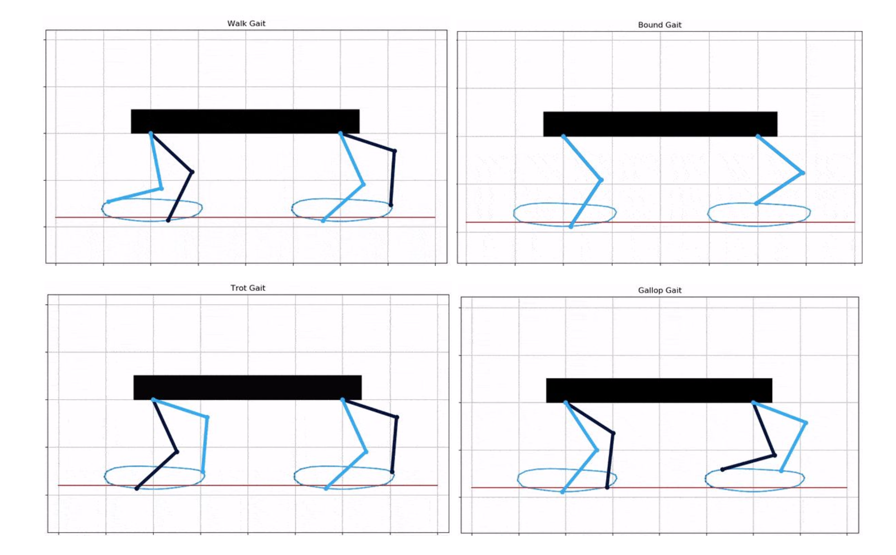
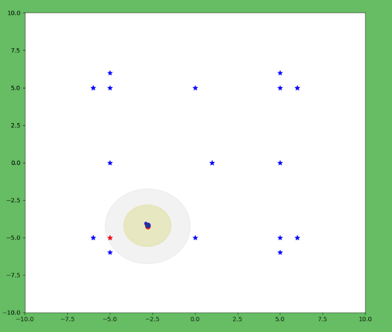
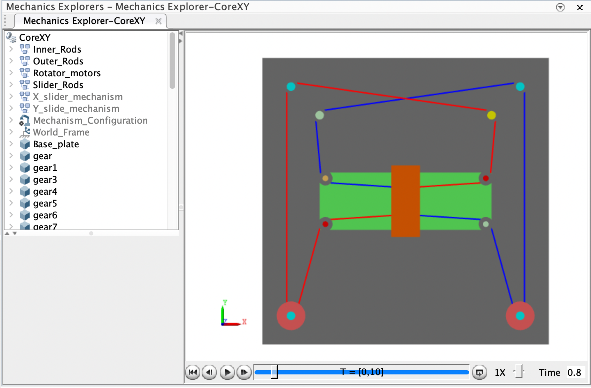

"Building Intelligent Robotics Systems Through AI/ML Innovation"
As a Robotics and AI Engineer, I specialize in developing intelligent systems that
seamlessly integrate artificial learning, perception, and robotics. Currently
pursuing my MS in Robotics at Columbia University, I'm
passionate about creating autonomous solutions that can perceive, learn, and interact with their
environment in real-time. My expertise spans from advanced perception algorithms for industrial
automation to reinforcement learning for adaptive robot control. I'm committed to pushing the
boundaries of AI and robotics, bridging cutting-edge research with practical applications to solve
complex challenges in automation and decision-making across industries.
Projects
Differentiable LOAM
Problem: Developing a differentiable variant of LOAM (Lidar Odometry and
Mapping) for end-to-end learning in autonomous vehicles.
Solution:
Developed a differentiable version of LOAM, enabling sensitivity analysis of point cloud
perturbations on map generation and path planning.
Refined differentiable point cloud sampling algorithms.
Implemented soft selection for scan registration and point selection from LiDAR data.
Designed and trained an attention-based neural network to assign weights to each point
based on their relevance for ICP.
Collected pointcloud data using the CARLA simulator for training the network.
Impact:
Enhanced autonomous navigation capabilities in environments with controlled dynamic
obstacles.
Improved overall mapping efficiency and robustness of LOAM in real-world scenarios.
Integrated and tested the system on MathWorks' autonomous vehicle platform,
demonstrating real-world self-driving capabilities.
Attention-based weighting helped mitigate the impact of dynamic obstacles, significantly
improving mapping efficiency.
Technologies: Python, PyTorch, ROS, CARLA Simulator, Deep Learning,
perception, point cloud processing.
Differentiable LOAM implementation for ADAS
Unmanned Aerial Vehicle
Problem: Design an autonomous system for a passenger drone capable of safe,
efficient navigation in complex urban environments with dynamic obstacles.
Solution:
Developed and implemented B-spline based path planning algorithms for smooth and
efficient drone navigation.
Integrated various sensors for enhanced environmental awareness and obstacle detection.
Utilized the local support property of B-splines to enable real-time path modification
in response to dynamic obstacles.
Impact:
Achieved collision-free navigation in simulated urban environments with dynamic
obstacles.
Enhanced the overall safety and efficiency of passenger drone operations.
Successfully contributed to a $1 Mn, government-funded project with significant
implications for urban air mobility.
Test flights at IIIT Hyderabad and IIT Hyderabad. As seen,
after going to offboard mode, the drone detects an obstacle in Rviz and
changes track from the red one by manipulating the control points of the Bspline curve -
generating a smooth trajectory.
Autonomous Wheelchair
Problem: Develop an autonomous wheelchair system capable of navigating
complex indoor environments like hospitals and airports using visual-language commands.
Solution:
Spearheaded the hardware implementation of an autonomous wheelchair prototype.
Implemented AMCL (Adaptive Monte Carlo Localization) for precise position estimation and
RTABmap (Real-Time Appearance-Based Mapping) for robust 3D mapping of indoor
environments.
Helped in training a Vision-and-Language Navigation (VLN) model, enabling natural
language inputs for intuitive control.
Optimized the system for accurate navigation in challenging indoor settings with dynamic
obstacles and varying layouts.
Impact:
Achieved high-precision indoor navigation, enhancing safety and reliability in complex
environments.
Enabled intuitive control through vision language commands, improving accessibility for
users.
Technologies: Python, ROS, VLM based Deep Learning, AMCL, RTABMaps, SLAM,
sensors, actuators, and Control Systems.
Video demonstration of the project and its tracking on rviz.
In this, we tested the bot's motion through congested door so had to give each
waypoint separately.
Autonomous Quadruped
Problem: Develop an advanced quadruped robot with Level 4 autonomy,
focusing on Reinforcement Learning for gait pattern mastery and complex physics
understanding.
Solution:
Led the design and implementation of an indigenous quadruped robot funded by BITSAA with
a grant of $30,000.
Developed a Reinforcement Learning (RL) environment for training the quadruped.
Simulated and trained the RL model to autonomously learn complex physics and master
diverse gait patterns.
Programmed and optimized various gait patterns using DDPG.
Integrated deep RL agent (DDPG) with ROS architecture to improve stability and
adaptability.
Impact:
Created a long-term learning platform for students to apply theoretical concepts in
robotics.
Pioneered an RL-focused approach, differentiating from kinematics-heavy designs like
Boston Dynamics' Spot.
Technologies: Python, OpenAI gym, PyTorch, ROS, Reinforcement Learning,
point, Pybullet.
Policy trained in DDPG using Bezier curves as the base policy.

Path planning for 7 dof panda arm
Problem: Develop sophisticated control and path planning algorithms for a
7-DOF Panda robot arm to perform precise movements and obstacle avoidance.
Solution:
Implemented Cartesian control and inverse kinematics using numerical methods for precise
arm manipulation.
Developed RRT (Rapidly-exploring Random Tree) path planning algorithm for obstacle
avoidance and goal-reaching tasks.
Utilized the null space of the Jacobian matrix for end effector stabilization while
manipulating the extra degree of freedom.
Technologies: ROS2, RviZ, Forward and Inverse Kinematics, Path planning.
Tango - Parallel Linked Quadruped
Problem: Developing a fast legged robot.
Solution:
Modeled, 3D printed, assembled, and wired up a parallel linkage quadruped for real-world
validation.
Deployed a Reinforcement Learning (RL) model for adaptive gait generation using Isaac
Sim and ROS2 architecture for teleop control.
Implemented strategies to close the Sim2Real gap, ensuring consistent performance
between simulation and reality.
Impact:
Due to the modern design, the bot achieved a walking speed of over 18 cm/s.
The parallel leg linkage helped in faster joint movements and increased the robustness
of the bot due to stable COM.
Technologies: ROS2, Pybullet, Sim2Real, Reinforcement Learning, Isaac Sim,
3D printing and CAD.
Chatbot for Crustdata API
Problem: Develop an intelligent chatbot capable of providing accurate
responses based on Notion documentation and Slack channel history.
Solution:
Implemented a specialized web chatbot using Langchain with RAG, integrating Notion
documention and examples along with additional knowledge from Slack.
Deployed the chatbot on Slack for instant query resolution.
Technologies: Langchain, RAG, NLP, APIs, LLM.
Flipkart Grid 2.0
Problem: Develop an autonomous hexacopter capable of precise indoor
navigation for the Flipkart Grid challenge.
Solution:
Implemented a computer vision system using Realsense camera and OpenCV to accurately
calculate the center coordinate position within the camera frame.
Designed and implemented a PID control system for precise movement towards specified
goals.
Impact:
Achieved top 5 ranking nationwide among 120+ registered teams in the Flipkart Grid
challenge.
Demonstrated advanced capabilities in autonomous drone navigation and precision control.
Technologies: Python, ROS, Gazebo, OpenCV, Control Systems.
Extended Kalman Filter
Implemented Extended Kalman filter for accurate 2D state estimation using noisy sensor data
in ROS2.

Solar panel cleaning bot
Under Dr. Manoj Soni's guidance, I led the development of an adaptive solar panel
cleaning robot, securing Rs 40,500 in funding for prototyping. Our approach evolved from an
initial X-Y core mechanism designed in MATLAB Simulink to a more advanced, efficient design.

Experience
SAP Labs
Developer Associate
Jul 2023 - Jul 2024
Consent Management System: Designed and implemented a consent management
system API using Data Privacy Integration service for the Information Collaboration Hub
(ICH) in Life Sciences. This system enabled dynamic terms and conditions popups for role
management, ensuring compliance with data privacy regulations.
ML based Support Optimization: Proposed and developed an ensemble model
using SAP Joule to classify and resolve common partner connection errors. This
initiative targeted 40% of support tickets, significantly decreasing response times and
reducing dependence on the support team.
Farmbot Showcase: Successful setup of Asia Pacific's first FarmBot at
D-shop, integrating it with SAP Business Technology Platform (BTP) based middleware to
connect to Farmbot API. This project effectively demonstrated SAP's advanced automation
capabilities to clients and partners along with Farm to Table concept :)
Technologies: Java, Springboot, API creation, SAP Joule, SAP Business
Technology Platform (BTP), Machine Learning, IoT Integration.
IIIT Hyderabad
Research Assistant
Jun 2022 - Dec 2022
Undergraduate Thesis at the Robotics Research Centre (RRC), IIIT Hyderabad, advised by
Prof.
Madhava Krishna.
Differentiable LOAM Developed an enhanced version of LiDAR Odometry and
Mapping (LOAM) for end to end learning and sensitivity analysis. Implemented soft selection
for scan registration and trained an attention-based neural network for point relevance
weighting, achieving up to 1.5x faster ICP convergence.
Passenger Carrying Drone: Contributed to a MeitY-funded passenger drone
project, focusing on B-spline based path planning and sensor integration. Implemented
algorithms for dynamic obstacle avoidance and real-time path modification, enhancing
navigation capabilities in complex urban environments.
Autonomous WheelchairLed hardware implementation for an IHub-Data funded
project to develop an autonomous wheelchair using Vision-and-Language Navigation (VLN).
Integrated RTABmap and AMCL for precise indoor navigation in hospitals and airports, and
trained a VLN model for natural language control.
Campus Binge
Summer Intern
Jun 2021 - Jul 2021
Developed a custom Discord bot using Python with role management functionality to
automatically assign and update member roles.
Created a scoring system to track member contributions and task completion and integrated
MongoDB for efficient and scalable data storage of member scores.
Simulated the electric powertrain for a Small Commercial Vehicle (Tata Ace) using MATLAB
Simulink and optimized the powertrain configuration to meet specific load and range
requirements.
Technologies: MATLAB, Simulink, Optimization, Control Systems.